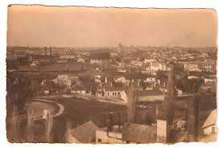
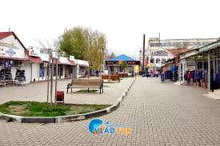
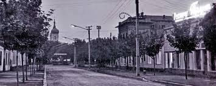
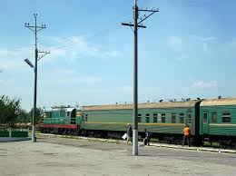

Home
Expozitie
Colecții
Vizite
Contacte
Fotografii vechi

Panorama Cahulului, cca. 1900
Vedere de ansamblu a orașului Cahul de la începutul secolului XX, înainte de marile transformări urbanistice.
Cca. 1900 · Colecție muzeală

Piața Centrală, sec. XIX
Piața principală a Cahulului în perioada țaristă, cu prăvălii și biruri caracteristice epocii.
Sec. XIX · Arhiva municipală

Strada Principală, 1930
Cahul în perioada interbelică — magazine, trăsuri și primele automobile pe strada comercială centrală.

Gara Veche a Cahulului
Stația feroviară a Cahulului, construită în 1878, punct nodal al transportului în sudul Basarabiei.
Înapoi
Colecțiile Muzeului de Istorie Cahul · Str. Independenței 2
Cahul, 3901 · Tel: +373 299 2-34-56 · info@muzeucahul.md